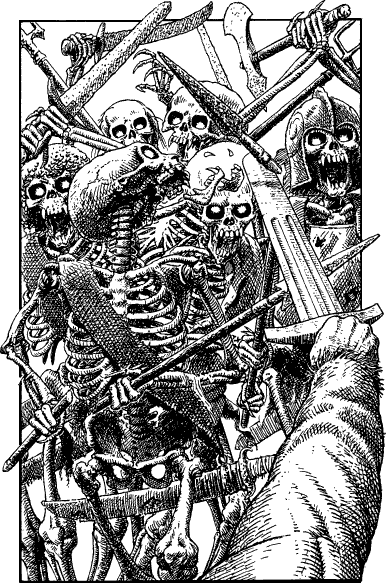

310
You hurry down the steps to the base of the watchtower and sprint along a slate-cobbled avenue which leads directly to the harbour. As you run, you see Captain Lanza with some of his garrison troops engaging in fierce hand-to-hand combat against a maniacal horde of skeletal warriors. The fighting is blocking the road which leads down to the quay, so you slip into an adjoining alley in the hope of finding another route to the ice-boat. You emerge from the alley and turn towards the harbour, only to find yourself confronted by a howling mass of fiery-eyed skeletons. You barely manage to unsheathe your weapon in time to defend yourself from their crazed attack.

Ixian Undead: COMBAT SKILL 43 ENDURANCE 52
These beings are immune to all forms of psychic attack, except Kai-surge and Kai-blast.
You may evade combat after three rounds by turning to 295.
If you win the combat, turn to 48.